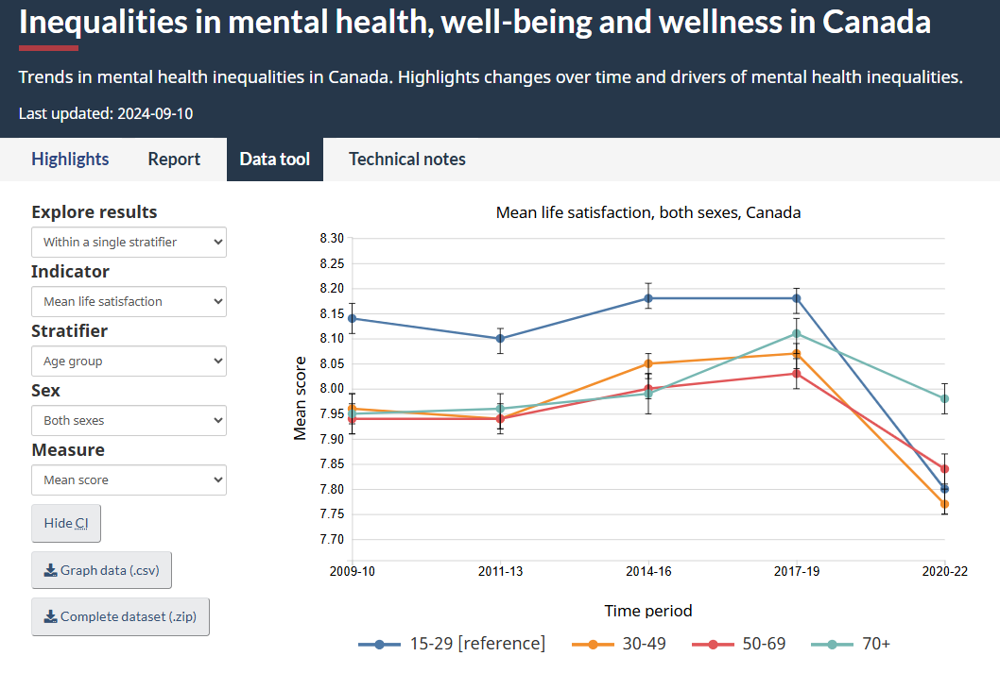

Publications Highlights
My scientific contributions include peer-reviewed publications, public health reports, media interviews, conference presentations, data blogs and tools:
👥 Reports
- Monitoring Changes in Health Inequalities through time – Government of Canada
- How to integrate intersectionality theory in quantitative health equity analysis? A rapid review and checklist of promising practices – Government of Canada
- Social inequalities in COVID-19 deaths in Canada – Government of Canada
- Syphilis in Canada: Technical report on epidemiological trends, determinants and interventions – Government of Canada
- Inequalities in mental health, well-being and wellness in Canada: Trends in mental health inequalities in Canada – Government of Canada
📊 Interactive Dashboards
I work with data analysts, epidemiologists, programmers and academic and community partners to ensure maximum real world impact of data analytics:
Explore inequalities in mental health in Canada over time using the Mental Health Inequalities Data Tool , developed with the Public Health Agency of Canada.
